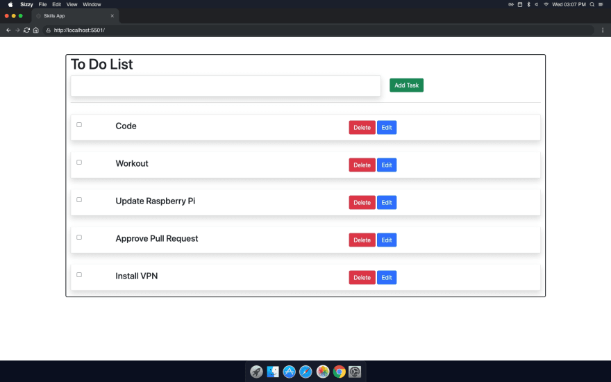

My Projects

Created a weather app with a frontend displaying weather data and a backend handling data retrieval from APIs, user authentication, and database management for storing user preferences and historical data.

Created a Spotify clone with HTML, CSS, and JavaScript for the frontend, Node.js for the backend, featuring music playback, animations, user authentication, playlists, and real-time data updates.

Develop a to-do list app with a PHP backend, featuring user authentication, task creation, updates, deletion, and storage in a database, ensuring data persistence and efficient task management.